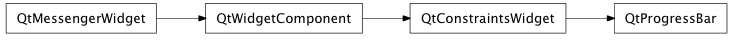

Bases: enaml.widgets.constraints_widget.ConstraintsWidget
A control which displays a value as a ticking progress bar.
The minimum value that the progress bar can take. Extra checks take place to make sure that the user does not programmatically set minimum > maximum.
The maximum value that the progress bar can take. Extra checks take place to make sure that the user does not programmatically set minimum > maximum.
The current value. Default is the minimum value. The value is bounded between minimum and maximum. Changing the boundary attributes might result in an update of value to fit in the new range. Attempts to assign a value outside of these bounds will result in a TraitError.
The percentage completed, rounded to an integer. This is a readonly property for convenient use by other Components.
How strongly a component hugs it’s content. ProgressBars expand to fill the available horizontal space by default.
A method called after initialization which allows the widget to bind any event handlers necessary.
alias of __NoInterface__

Bases: enaml.qt.qt_constraints_widget.QtConstraintsWidget
A Qt implementation of an Enaml ProgressBar.